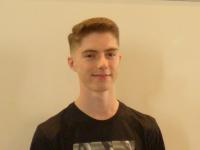

BOLLIAND Matthieu
 During Terminal S came to me the idea of informatics, specially thank to ISN option. I was really fond of my first steps in programming. Moreover, I realized that informatics were already very important for our system and will improve tomorrow. After trying JavaScript, I always have loved learning new ways to code. This is why our project seem so important to me, because Virtual Reality is part of a new game style more and more appreciated and used. There will be so much to learn, so much things I will be able to apply in my future personal projects. To continue, Pac-Man is a well-known game, that fits to anyone, so VR will offer a new experience, like a remake. Therefore, I am very motivated to complete this project.
During Terminal S came to me the idea of informatics, specially thank to ISN option. I was really fond of my first steps in programming. Moreover, I realized that informatics were already very important for our system and will improve tomorrow. After trying JavaScript, I always have loved learning new ways to code. This is why our project seem so important to me, because Virtual Reality is part of a new game style more and more appreciated and used. There will be so much to learn, so much things I will be able to apply in my future personal projects. To continue, Pac-Man is a well-known game, that fits to anyone, so VR will offer a new experience, like a remake. Therefore, I am very motivated to complete this project.
COTONI Nicolas
I come from the Ain region, so I spent my childhood playing videogames or outside. I have also started skateboarding with friends few years ago, then it became a hobby. Unfortunately, since I live in Lyon, I have no occasion to ride anymore. Pupil from a Terminale S SVT class, I didn’t get any basis in informatics at school because ISN option was not available. Nevertheless, I have started learning by myself how to code with HTML and CSS at Secondary school. Since that moment I was waiting to be accompanied by teachers to enhance my capacities. Now I really love this project because I am fond of new technologies and arcades. Of course, as videogames took a large part of my time when I was younger, I am really proud to get the occasion to make one.
FLAMAND Benoit
I come from a country high school, so playing with friends was inevitable. They let me discover videogames to which I played while I used to manipulate my father’s old computer. I am passionate about informatics forever, so I have chosen Lyon to go to EPITA. Last year in Terminale S-SI option ISN, I got the opportunity to study in more detail engineering sciences, informatics and programming. Using Python for some little projects, I was able to apply some basics in programming. Moreover, informatics sciences and electronics take more and more part in our society. For example, in my opinion, informatics is a growing field: we have everything to create, develop, but overall, to secure and protect! In EPITA I have met persons with same hobbies, then I am all the more proud of our project group, motivated and immersed in a learning spirit! I am determined to increase my skills and to learn from my mistakes, as this project is a real challenge.
ROBIN Valentin
 As I am from a Terminale S-SVT class, I could not participate to ISN option because my school did not propose it. Therefore, informatics was not in my program. Nevertheless, I was passionate about informatics and new technologies in general, which permitted me to clarify my choice. My experiences in programming are weak as they only content some knowledges in basis, calculators’ mini-games and projects in Arduino. Thanks to EPITA, I have been able to catch up and acquire notions in programming. Whereas I never had the chance to really code before, I am and stay very motivated and interested in this domain. The project let me obtain new competences in informatics and group work methods.
As I am from a Terminale S-SVT class, I could not participate to ISN option because my school did not propose it. Therefore, informatics was not in my program. Nevertheless, I was passionate about informatics and new technologies in general, which permitted me to clarify my choice. My experiences in programming are weak as they only content some knowledges in basis, calculators’ mini-games and projects in Arduino. Thanks to EPITA, I have been able to catch up and acquire notions in programming. Whereas I never had the chance to really code before, I am and stay very motivated and interested in this domain. The project let me obtain new competences in informatics and group work methods.